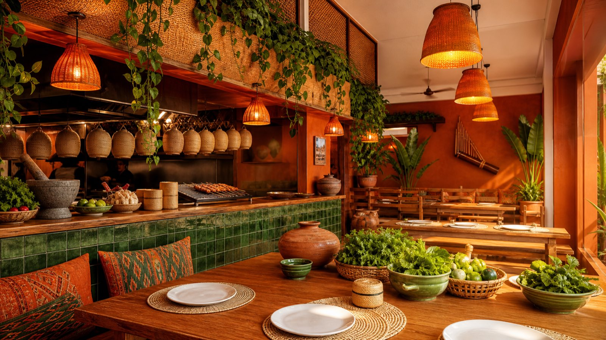

เมล็ดจากไร่ที่เรารู้จัก
รับเมล็ดตรงจากเกษตรกรดอยช้างและดอยปางขอน คั่วสดทุกสัปดาห์ในระดับ Medium‑Light เพื่อเก็บกลิ่นดอกไม้และผลไม้ไว้ครบ
Slow coffee · Quiet mornings
คาเฟ่เล็ก ๆ สไตล์มินิมอล ที่คัดเมล็ดกาแฟ Single Origin จากดอยช้าง คั่วสดทุกสัปดาห์ เสิร์ฟคู่เบเกอรี่ที่อบใหม่ตั้งแต่ 6 โมงเช้า
เกี่ยวกับเรา
ใบเขียวเริ่มต้นในปี 2562 จากห้องแถวไม้เก่าหนึ่งคูหา เราเชื่อว่ากาแฟที่ดีไม่ต้องซับซ้อน แค่วัตถุดิบซื่อสัตย์ พื้นที่ที่สบายใจ และเวลาที่ไม่เร่งรีบ
รับเมล็ดตรงจากเกษตรกรดอยช้างและดอยปางขอน คั่วสดทุกสัปดาห์ในระดับ Medium‑Light เพื่อเก็บกลิ่นดอกไม้และผลไม้ไว้ครบ
ครัวซองต์หมัก 48 ชั่วโมง ใช้เนยฝรั่งเศส AOP แท้ 100% ไม่มีการอุ่นซ้ำ ขายหมดคือหมด
ปลั๊กไฟทุกโต๊ะ Wi‑Fi 500 Mbps และโซนเงียบชั้นลอยสำหรับคนที่ต้องการสมาธิ
มีนมโอ๊ต อัลมอนด์ และเมนูวีแกนครบทุกหมวด พร้อมส่วนลด 10 บาทเมื่อพกแก้วมาเอง
ซิกเนเจอร์
Baikiew Signature — Espresso · Coconut · Pandan
เอสเปรสโซ่ดอยช้างช็อตเข้ม เทลงบนน้ำมะพร้าวหอมใบเตยเย็นจัด ได้ความหวานธรรมชาติ ไม่ใส่น้ำตาลเพิ่ม
Uji Matcha Latte — Ceremonial grade
ผงมัทฉะเกรดพิธีจากอุจิ เกียวโต ร่อนละเอียดและตีสดทุกแก้ว รสกลมกล่อม ขมนุ่มปลายลิ้น หวานน้อยได้
Matcha Basque Cheesecake
เนื้อครีมชีสเนียนหนัก ผิวหน้าไหม้หอม ตัดรสด้วยมัทฉะเข้ม อบวันละ 2 รอบ เที่ยงและบ่ายสามโมง
บรรยากาศ
เพดานสูง 4 เมตร แสงธรรมชาติทั้งวัน และต้นไม้จริงกว่า 40 กระถาง

เสียงจากลูกค้า
★★★★★“ซิกเนเจอร์มะพร้าวใบเตยคือของจริง หวานกำลังดีแบบไม่ต้องเติมน้ำตาล นั่งทำงานได้ทั้งบ่ายไม่มีใครมาไล่”
ปาล์ม · Google Review
★★★★★“ครัวซองต์ดีที่สุดในย่านนี้ ชั้นกรอบร่วนจริง ไปสายหน่อยคือหมด ต้องไปก่อนสิบโมง”
Nina W. · Instagram
★★★★★“ร้านเงียบ ต้นไม้เยอะ พนักงานจำออเดอร์ประจำได้ ชอบที่มีนมโอ๊ตทุกเมนูโดยไม่ต้องขอ”
ก้อย · ลูกค้าประจำ
ที่ตั้ง & เวลาเปิด
128/4 ซอยสุขุมวิท 31 (สวัสดี)
แขวงคลองตันเหนือ เขตวัฒนา กรุงเทพฯ 10110
เดิน 6 นาทีจาก BTS พร้อมพงษ์ ทางออก 5 · มีที่จอดรถ 12 คัน
| จันทร์ – ศุกร์ | 07:00 – 19:00 |
|---|---|
| เสาร์ – อาทิตย์ | 08:00 – 20:00 |
| ครัวบรันช์ | 08:00 – 16:00 |
| หยุดประจำปี | 1 มกราคม & 13–15 เมษายน |
กำลังตรวจสอบเวลา…
โทร 02‑000‑1280 · LINE @baikiewcafe
อีเมล hello@baikiew.cafe
รับจองสำหรับ 2–10 ท่าน · ยืนยันกลับภายใน 1 ชั่วโมงในเวลาทำการ